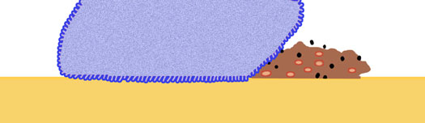

Home / Deep Daily Cleansing
Skinvac Deep Daily Cleansing
Deep Cleansing without Soap! Soft, Fresh & Non-drying
Instant Cleansing and Toning
Skinvac's Deep Daily Cleansing removes the Build up of Daily Grime that you can't even see, watch video footage! If you live in the city or travel to and from work everyday in cars, buses or trains, you will see the grime come of your face. All you get is Refreshed Squeaky Clean Skin.
Facial Grime is made up of excess facial oil, dirt, impurities, dead skin cells & pollutants such as car exhaust & cigarette smoke. Skinvac's Deep Daily Cleanser has an Ultra Fine Grip texture that Grips Away the build up of daily Grime. Skinvac works with your skin, not against it.
Suitable face washing for all skin types:
✔️ For Normal Skin: it Retains your Natural Protective Facial Oil Level
✔️ For Dry Skin: it's Non-Drying and Alcohol Free
✔️ For Oily Skin: it Re-balances and Reduces Breakouts and Shine
✔️ For Combo Skin: it Evens out Oil Distribution all over
✔️ For Sensitive Skin: it is Chemical Free
See it the dirt come off!
Skinvac's Deep Daily Cleansing Towel is so fine you can't even see the Weave! It's Ultra Fine Grip texture Deep Cleanses your face and is super soft.
Wipe away grime you can't even see! Grip away the daily build up of city grime from your skin without drying it out. Instant Deep Cleansing without soap or harsh chemicals! Works Make up too!
Instructions to wash your face:
Activating your cloth: Wet your Skinvac's Deep Daily Cleansing Towel with warm water & squeeze out the excess water, hold it anyway you like or you can also fold it as follows to make an easy to use facial pad.
Gently wipe off daily build up of Facial Grime.
Feel it work: Rub a finger over your forehead, feel fresh & squeaky clean without soap!
Apply a light moisturizer as necessary. (You may find that because Skinvac retains your skin's Natural Oils, less moisturizer is needed).
Care Instructions
Hand or machine wash thoroughly after each use. Do not use fabric conditioner, do not tumble dry or iron. Keep your Skinvac Pore Gripper clean and dry when not in use.
FAQ
Q. What's the difference between Skinvac Deep Daily Cleansing Towel and a normal towel?
A. The Deep Daily Cleansing Towel has a ultra fine surface texture which when activated by water becomes"grippy". Cleansing your face with this ultra fine grip, removes facial grime and make up by dislodging and absorbing it away from your skin rather than just pushing it around the face leaving residue. It's also much gentler and softer than a normal towel.
Q. What is the Difference Between Deep Daily Cleansing Towel and a disposable Daily Wipe?
A. Disposable Daily wipes are impregnated with chemicals that you don't rinse off, this can leave unwanted residue, Disposable wipes are also single use only whereas the Deep Daily Cleansing Towel is chemical free and reusable.
Q. How Does the Deep Daily Cleansing Towel cleanse dry or sensitive skin?
A. Simply by avoiding the use of solvents, acids or alcohol to cleanse or remove makeup, using only water, its gentle on dry or sensitive skin without causing dry flaking.
Q. How Does the Deep Daily Cleansing Towel help oily or acne prone?
A. Using water only, it does not strip away the skin's natural protective oil barrier which can trigger a breakout and calms oil production, re-balancing it to reduce shine and acne.
Q. What if I have combination skin?
A. Skinvac works on combination skin by re-balancing facial oil over dry and oily areas.
Q. How does the Deep Daily Cleansing Towel maximize my skin treatments?
A.The ultra fine grip removes dead skin cells, allowing more absorption of your creams and treatments, so you don't waste it on dead flaking skin cells.
Q. Can Deep Daily Cleansing Towel prepare my face for make up application?
A. Think of your skin as a blank wall for a painting. The Texture of the canvas affects the finished look no matter how expensive the paint or how talented the painter. Using Deep Daily Cleansing Towel to buff and polish your skin provides a smooth and even base for your make applications.
Q. What is the Difference Between Deep Daily Cleansing Towel and a disposable Daily Wipe?
A. Disposable Daily wipes are impregnated with chemicals that you don't rinse off, this can leave unwanted residue, Disposable wipes are also single use only whereas Deep Daily Cleansing Towel is chemical free and reusable.
Q. How long does Deep Daily Cleansing Towel last?
A. Up to 200 washes for maximum effectiveness.